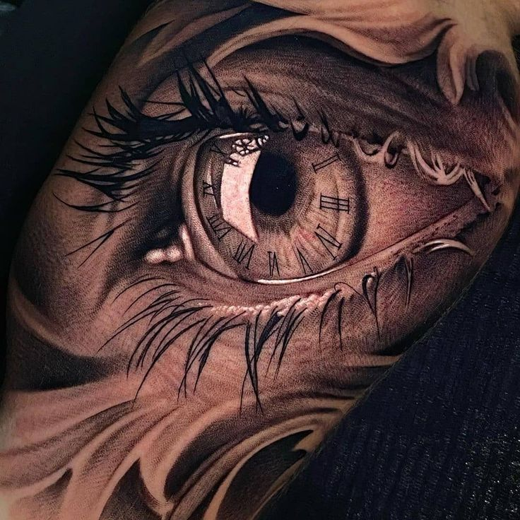

Trabalhos em Realismo
Especialidade em retratos e tatuagens hiper-realistas com técnicas avançadas de sombreamento e detalhamento fotográfico.

Retrato Realista
Trabalho em realismo fotográfico com técnicas avançadas de sombreamento e detalhamento preciso.
Artista: Marcus Silva
Tempo: 6 horas

Aquarela Realista
Combinação única de realismo com técnica aquarela, criando efeitos de cor e textura únicos.
Artista: Marcus Silva
Tempo: 4 horas
Interessado em Realismo?
Agende uma consulta com Marcus Silva e desenvolva seu projeto de tatuagem realista personalizado